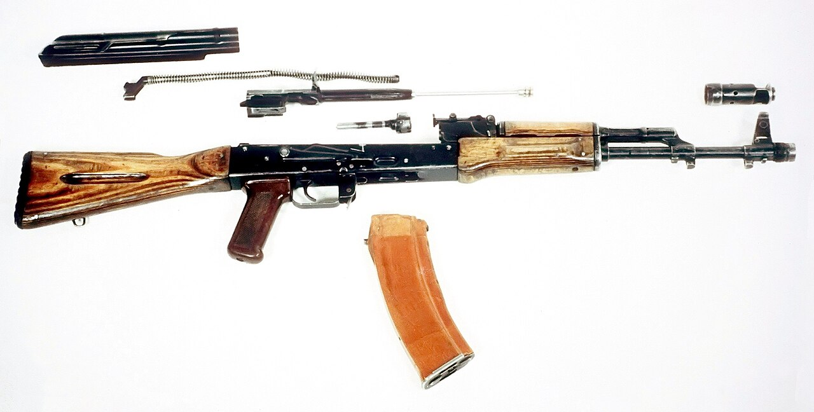

Атыс дайындығы Firearms Training Огневая подготовка
АК-ның негізгі бөлшектері мен механизмдері — нөмірлері бойынша. The AK's main parts and mechanisms — read by the numbered callouts. Основные части и механизмы АК — по номерам выносок.

Калашников автоматы (АК) — қарсыластың тірі күші мен от құралдарын жоюға арналған жеке автоматты қару. Оны 1947 жылы М.Т. Калашников жасаған; жоғары сенімділігі мен қарапайымдылығы оны әлемдегі ең көп тараған автоматқа айналдырды. Автоматика оқпаннан ату газдарын бұру және жапқышты бұрап бекіту принципі бойынша жұмыс істейді. Құрылысын білу — қаруды дұрыс пайдаланудың, тазалаудың және кідірістерді жоюдың негізі. The Kalashnikov rifle (AK) is an individual automatic weapon for destroying the enemy's manpower and fire assets. Designed by M. T. Kalashnikov in 1947, its high reliability and simplicity made it the most widespread rifle in the world. The action works by tapping propellant gases from the barrel with a rotating-bolt lock. Knowing its design is the basis for correct use, cleaning and clearing stoppages. Автомат Калашникова (АК) — индивидуальное автоматическое оружие для поражения живой силы и огневых средств противника. Создан М. Т. Калашниковым в 1947 году; высокая надёжность и простота сделали его самым распространённым автоматом в мире. Автоматика работает за счёт отвода пороховых газов из ствола с запиранием поворотом затвора. Знание устройства — основа правильной эксплуатации, чистки и устранения задержек.
| ПараметрParameterПараметр | МәніValueЗначение |
|---|---|
| КалибрCalibreКалибр | 5,45 мм (АК-74) / 7,62 мм (АКМ)5.45 mm (AK-74) / 7.62 mm (AKM)5,45 мм (АК-74) / 7,62 мм (АКМ) |
| Көздеу қашықтығыSighting rangeПрицельная дальность | 1000 м1000 m1000 м |
| Атыс қарқыныRate of fireТемп стрельбы | ~600 оқ/мин~600 rounds/min~600 выстр./мин |
| Жауынгерлік атыс жылдамдығыCombat rate of fireБоевая скорострельность | ~40 (жекелеп) / ~100 (кезекпен) оқ/мин~40 (single) / ~100 (bursts) rounds/min~40 (одиночными) / ~100 (очередями) выстр./мин |
| Оқжатар сыйымдылығыMagazine capacityЁмкость магазина | 30 патрон30 rounds30 патронов |
| СалмағыMassМасса | ~3,6 кг~3.6 kg~3,6 кг |
| Оқтың бастапқы жылдамдығыMuzzle velocityНачальная скорость пули | ~900 м/с~900 m/s~900 м/с |
| Тиімді атыс қашықтығыEffective rangeЭффективная дальность | ~400 м (нүктелік нысана)~400 m (point target)~400 м (по точечной цели) |
| Оқтың өлтіретін әсеріLethal range of the bulletУбойная сила пули | ~1350 м-ге дейін сақталадыretained up to ~1350 mсохраняется до ~1350 м |
| №No.№ | Бөлшек / механизмPart / mechanismЧасть / механизм | ҚызметіPurposeНазначение |
|---|---|---|
| 1 | Оқпан қорапты оқпанBarrel with receiverСтвол со ствольной коробкой | көздеуіш пен дүмбісі бар, оқты бағыттайдыwith sight and stock; directs the bulletс прицелом и прикладом; направляет пулю |
| 2 | Оқпан қорабының қақпағыReceiver coverКрышка ствольной коробки | механизмдерді ластан қорғайдыprotects the mechanisms from dirtзащищает механизмы от загрязнения |
| 3 | Газ поршеньді жапқыш жақтауыBolt carrier with gas pistonЗатворная рама с газовым поршнем | жапқышты қозғалысқа келтіредіdrives the bolt into actionприводит в движение затвор |
| 4 | ЖапқышBoltЗатвор | патронды салады, оқпанды бекітедіchambers the round, locks the barrelдосылает патрон, запирает ствол |
| 5 | Кері қайтару механизміRecoil mechanismВозвратный механизм | жақтауды алдыңғы күйіне қайтарадыreturns the carrier to the forward positionвозвращает раму в переднее положение |
| 6 | Оқпан жапсырмалы газ түтігіGas tube with handguardГазовая трубка со ствольной накладкой | газды поршеньге бағыттайдыchannels gas to the pistonнаправляет газы к поршню |
| 7 | Соғу-түсіру механизміTrigger (firing) mechanismУдарно-спусковой механизм | атуды жүзеге асырадыfires the shotосуществляет выстрел |
| 8 | ҚаптырмаFore-end (handguard)Цевьё | қаруды ұстауға ыңғайлы етедіgives a comfortable holdобеспечивает удобный хват |
| 9 | ОқжатарMagazineМагазин | патрондарды сақтайды және бередіholds and feeds the roundsхранит и подаёт патроны |
Штык-пышақBayonet-knifeШтык-нож
қол ұрысы және шаруашылықclose combat and utilityрукопашный бой и хозработы
ПеналAccessory caseПенал
тазалау құралдарын сақтайдыholds the cleaning toolsхранит инструменты для чистки
ШомполCleaning rodШомпол
оқпан өзегін тазалайдыcleans the boreпрочищает канал ствола
МайлықOilerМаслёнка
майлау материалын тасидыcarries the lubricantдля хранения смазки
Атыс жекелеп және автоматты (кезекпен) түрде жүргізіледі. Оқпан қорабының оң жағындағы аудармашы-сақтандырғыштың үш күйі бар:Fire can be single or automatic (in bursts). The selector-safety on the right of the receiver has three positions:Огонь ведётся одиночный и автоматический (очередями). Переводчик-предохранитель справа на ствольной коробке имеет три положения: